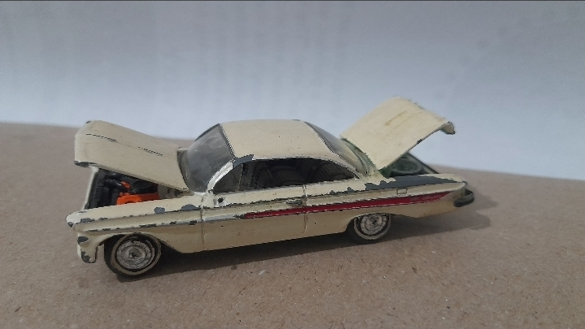
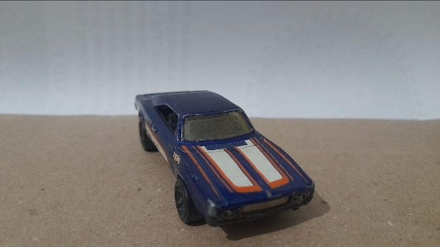
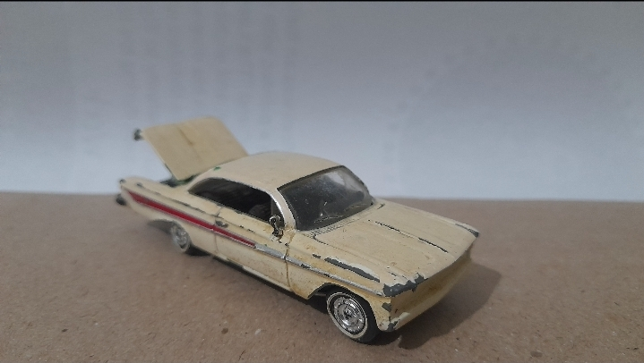

A VINTAGE ART DIOROMA
PRESERVED HISTORY
and THE HIDDEN BEAUTY OF THE VINTAGE CAR DIOROMA
miniature
Where history meets art, imagination and craftsmanship. Discover a miniature world hidden between the pages of an extraordinary story.


OUR FEATURED AUTOMOBILE
Dodge Challenger
The Dodge Challenger was introduced in 1969 as a 1970 model by Dodge, a division of Chrysler Corporation. During the late 1960s, American car manufacturers were competing to produce powerful, stylish sports coupes. Dodge introduced the Challenger to compete with cars such as the Ford Mustang and Chevrolet Camaro. It quickly became one of the iconic American muscle cars.

OUR FEATURED AUTOMOBILE
Chevrolet Bel Air
The Chevrolet Bel Air became particularly famous during the 1950s. The 1957 version is among the most recognizable American vintage cars ever produced. During this period, American automobile design was heavily influenced by aviation and the Space Age. Designers introduced futuristic shapes, chrome details and aircraft-inspired tail fins. The 1957 Bel Air became a symbol of American prosperity, fashion and automobile innovation.
Art gives history
a new way to live.
A CREATION INSPIRED BY THE BEAUTY OF THE PAST